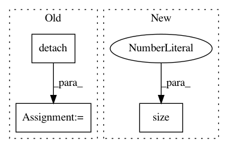

0de148f6892361e61d4b68cf97814e73692f6b1a,docs/_static/examples/gan.py,GAN,forward,#GAN#Any#Any#,92
Before Change
self.discriminator.zero_grad()
// Discriminator Forward
state[DISC_GEN_DET] = self.discriminator(state[GEN_IMGS].detach())
state[DISC_REAL] = self.discriminator(real_imgs)
After Change
def forward(self, real_imgs, state):
z = Variable(torch.Tensor(np.random.normal(0, 1, (real_imgs.shape[0], latent_dim)))).to(state[tb.DEVICE])
img = self.model(z)
img = img.view(img.size(0), *img_shape)
return img
In pattern: SUPERPATTERN
Frequency: 3
Non-data size: 3
Instances
Project Name: ecs-vlc/torchbearer
Commit Name: 0de148f6892361e61d4b68cf97814e73692f6b1a
Time: 2019-03-14
Author: mp2u16@ecs.soton.ac.uk
File Name: docs/_static/examples/gan.py
Class Name: GAN
Method Name: forward
Project Name: rusty1s/pytorch_geometric
Commit Name: f6532b3c4c329e6d5d5fb846acc441df47616c4c
Time: 2020-03-22
Author: matthias.fey@tu-dortmund.de
File Name: torch_geometric/nn/models/gnn_explainer.py
Class Name: GNNExplainer
Method Name: explain_node
Project Name: Zhaoyi-Yan/Shift-Net_pytorch
Commit Name: 8f6a6f153781d0908fb0904349aae844494026ea
Time: 2018-12-03
Author: yanzhaoyi@outlook.com
File Name: models/shiftnet_model.py
Class Name: ShiftNetModel
Method Name: backward_D